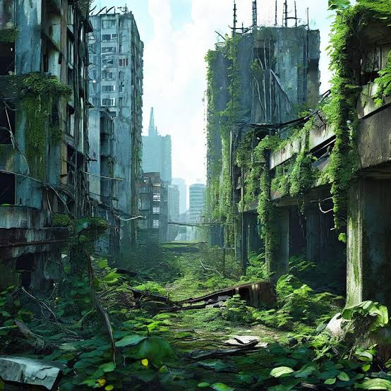

The world was suddenly plunged in what could only be described as a tragedy. The sky split open and began to rain acid, leaving those outside during the tragedy to be burned till they were nothing but bones. Thankfully those inside were saved from the physical harm that came from the acid rain but left with a emotional/mental pain that would never leave them. Those left could only hope to survive with what they find around the city...not knowing when the rain will come back.
